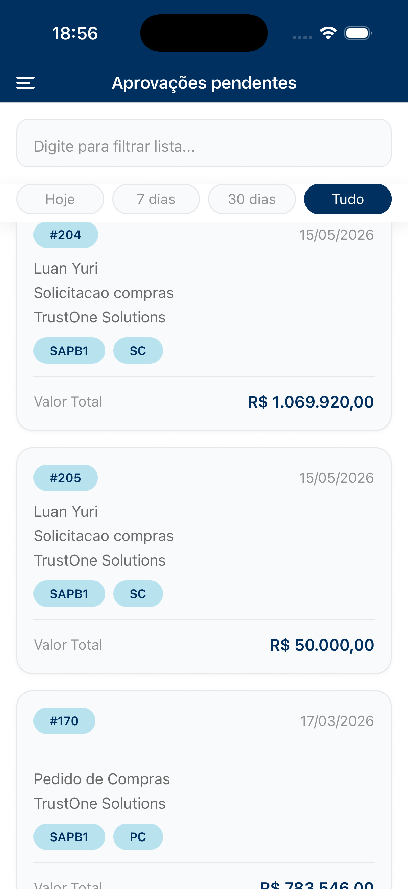
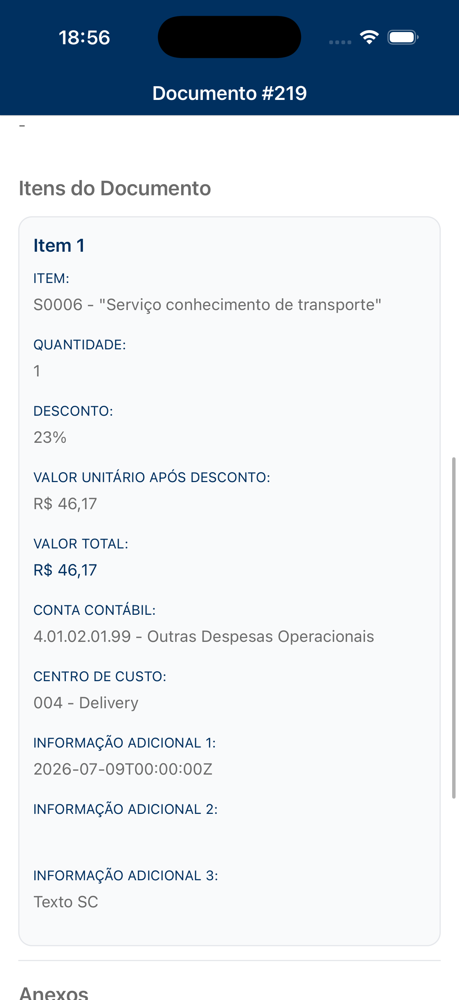
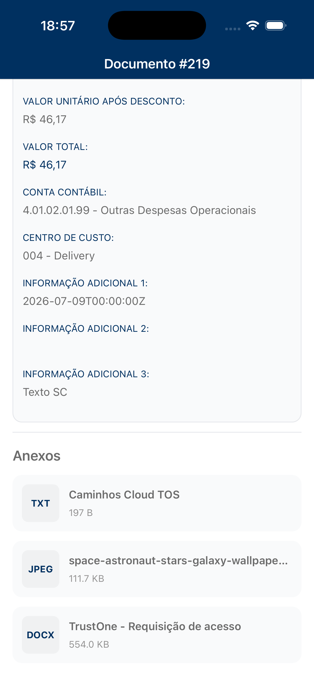
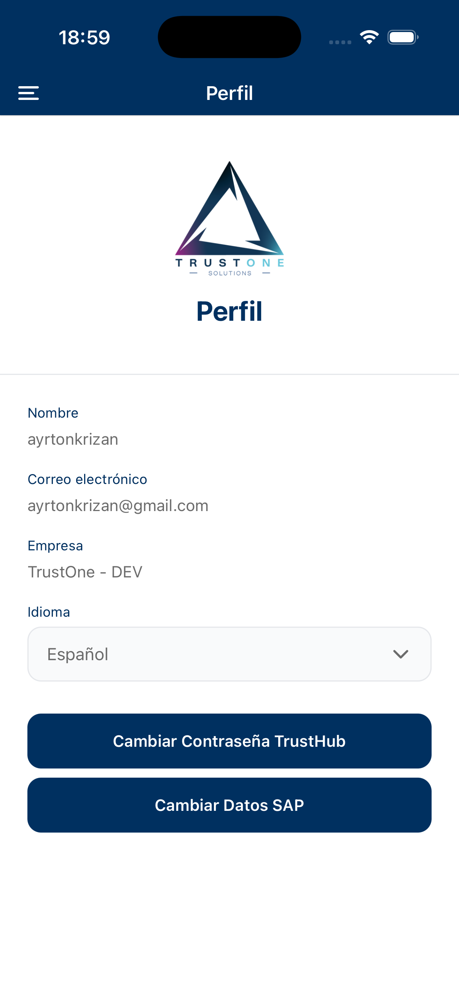

A pessoa certa, no momento certo.
Uma nova aprovação disponível gera alerta para que a análise comece sem depender de cobrança manual.
— TrustHub · Aprovações empresariais
O TrustHub agiliza aprovações de documentos e processos corporativos para que você decida em tempo real, de qualquer lugar, com segurança e contexto.

— O problema
— A solução
O TrustHub centraliza decisões em um único aplicativo. O responsável é notificado, recebe o contexto necessário e devolve a decisão ao processo empresarial sem interromper a operação.
Uma nova aprovação disponível gera alerta para que a análise comece sem depender de cobrança manual.
Itens, valores, fornecedor, dados do documento e anexos ficam reunidos no mesmo fluxo.
Aprove ou reprove com observações, preservando status e histórico para consulta.
A decisão retorna ao ERP para que as próximas etapas aconteçam com continuidade.
— Veja o TrustHub
Da lista de pendências à análise detalhada de documentos, o TrustHub reúne o contexto necessário para decidir sem interromper a operação.
Visualize solicitações, valores e status em uma lista organizada.

Consulte itens, valores e centros de custo antes de aprovar.

Um diferencial do TrustHub: visualize os anexos do processo no aplicativo, recurso que o app da SAP não oferece.
Acesse vendas do mês e do dia diretamente pelo aplicativo.

Configure preferências de idioma no perfil e navegue pelo TrustHub em diferentes idiomas.
— Como funciona
A aprovação chega ao aplicativo e o responsável é notificado.
Consulte valores, fornecedor, itens, informações do documento e anexos.
Aprove ou reprove incluindo observações sempre que necessário.
A decisão retorna ao processo empresarial e o fluxo segue automaticamente.
— Funcionalidades
Receba notificações push sempre que uma nova aprovação precisar de análise.
Consulte fornecedor, valor, emissão, itens detalhados e outras informações antes de decidir.
Acesse documentos e arquivos anexos para tomar decisões com mais contexto.
Inclua comentários ao aprovar ou reprovar e mantenha o histórico de cada decisão.
Acompanhe vendas mensais e diárias, indicadores e comparação com metas.
Encontre aprovações por período, fornecedor, valor ou número do documento.
Consulte documentos processados e filtre o histórico por status.
Visualize falhas de integração, acompanhe mensagens e reenvie documentos quando necessário.
Alterne rapidamente entre empresas e gerencie diferentes contextos no mesmo aplicativo.
Atualize dados SAP, senha e preferências de idioma com segurança.
— Integração empresarial
O TrustHub trabalha conectado ao SAP e a outros ERPs. Dados e status são sincronizados para que aprovações e reprovações retornem ao fluxo empresarial com rastreabilidade.
Falar com especialista“O TrustHub conecta pessoas, documentos e sistemas. As decisões são registradas no aplicativo e retornam rapidamente ao processo empresarial, reduzindo retrabalho e mantendo a operação em movimento.”
— Para quem é
— Benefícios
Reduza o tempo aguardando aprovações e dê continuidade a compras, pagamentos e processos internos.
Acesse documentos e anexos antes de aprovar, com contexto suficiente para decidir.
Tenha registro de decisões, observações, pendências e aprovações processadas.
Aprove documentos de onde estiver, sem desconectar a decisão do processo empresarial.
— Segurança e confiabilidade
O TrustHub foi pensado para manter as decisões acessíveis sem abrir mão de práticas adequadas de proteção e privacidade.
— TrustHub
Centralize decisões, reduza esperas e mantenha seus processos empresariais em movimento com o TrustHub.
Solicitar demonstraçãoSuporte: suporte@trustone.solutions